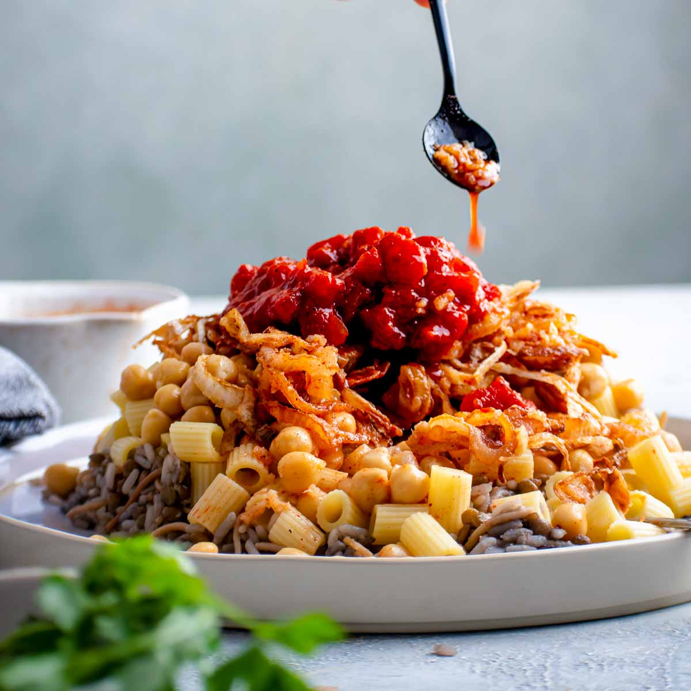
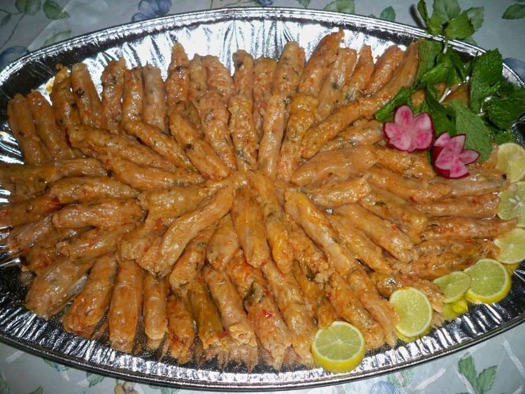

my best food in Egypt
kashary
Koshari (or Kushari) is Egypt's national dish, a popular, affordable, and vegan street food. It is a hearty mix of rice, lentils, and macaroni topped with spiced tomato sauce, garlic-vinegar, chickpeas, and crispy fried onions. Originating in the 19th century, it is the ultimate Egyptian comfort food

mashy
Mahshi (Egyptian Stuffed Vegetables) is a famous traditional dish in Egypt. The word “mahshi” means “stuffed.” It is made by stuffing vegetables with a mixture of rice, herbs, and spices. Common vegetables used in mahshi include zucchini, eggplant, peppers, cabbage, and grape leaves. The rice filling usually contains parsley, dill, coriander, tomato sauce, onions, and spices. Sometimes people add minced meat to the mixture. Mahshi is cooked in a pot with tomato sauce or broth, which gives it a rich and delicious flavor. It is often served during family gatherings, holidays, and special occasions. Many Egyptians love mahshi because it is tasty, healthy, and full of flavor. It is also considered one of the most popular dishes in Egyptian cuisine.
